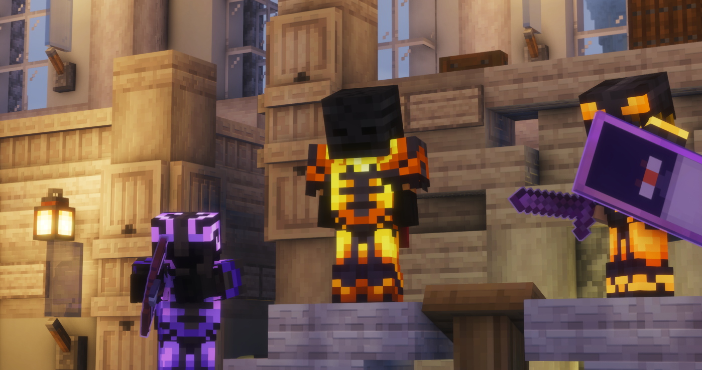

Les hommes en noir passent à l'attaque
Le Nether verrouillé et un service militaire instauré. Karminéa fait face à sa menace la plus grave.

Les hommes en noir font face aux forces de Karminéa.
L'heure est grave à Karminéa. Une attaque sans précédent vient de frapper notre cité, orchestrée par la mystérieuse faction connue sous le nom des hommes en noir. Face à cette escalade soudaine de la violence et aux nouvelles menaces qui pèsent sur notre territoire, les autorités déploient des mesures drastiques pour assurer la survie de la ville et de ses habitants.
🌑 Une menace de l'ombre devenue réalité
Ce que beaucoup prenaient pour des rumeurs de couloir est devenu notre plus sombre réalité : les hommes en noir nous ont attaqués. Mais l'événement ne s'arrête pas là. Les autorités ont confirmé que cette faction est officiellement entrée en contact avec notre gouvernement. Si les détails précis de leurs revendications restent encore confidentiels, la teneur des échanges ne laisse aucun doute sur la gravité de la situation. Karminéa est en état d'alerte maximale.
🔥 Fermeture du Nether : tolérance zéro
Conséquence directe de cette prise de contact et de l'attaque, une décision radicale et immédiate a été prononcée : l'entrée dans le Nether est désormais strictement interdite. C'est un ordre ferme. Les autorités estiment que la zone est devenue un piège mortel. Quiconque tentera de franchir les portails ou de braver cette interdiction s'exposera à de très lourdes sanctions pénales. L'heure n'est plus à l'exploration, mais au confinement stratégique des zones à haut risque.
⚔️ Instauration d'un service militaire préventif
Face à la puissance de frappe de ce nouvel ennemi, la sécurité de la ville ne peut plus reposer sur les seules épaules des forces de l'ordre habituelles. Pour anticiper de futures offensives, le gouvernement annonce la mise en place immédiate d'un service militaire. Cette mesure de prévention vise à former la population, à renforcer nos lignes de défense et à préparer Karminéa à se protéger contre toute éventualité. Les détails concernant les modalités de conscription et d'entraînement seront communiqués très prochainement.
✊ Ce qu'il faut retenir
La ville entre dans une nouvelle ère où la vigilance est de mise. Le peuple de Karminéa doit rester uni, respecter les consignes de sécurité, et se tenir prêt. Le Karmine Déchaîné continuera de vous informer en temps réel de l'évolution de ce conflit inédit.
« Quand les ombres menacent de dévorer la lumière, c'est à la cité tout entière de se tenir prête à faire face. »— La Rédaction du Karmine Déchaîné